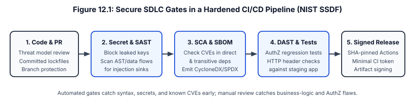

Chapter 12: Secure SDLC, Dependency Risk, and Software Supply Chain
Learning Objectives
By the end of this chapter, you should be able to:
- Integrate security practices into each phase of the Software Development Lifecycle using NIST SP 800-218 (SSDF).
- Explain third-party dependency risk (OWASP A06:2021) including transitive dependencies and lockfile integrity.
- Compare SAST, DAST, SCA, and secret scanning, and understand what each detects and misses.
- Harden CI/CD pipelines (such as GitHub Actions) against credential leaks and supply-chain tampering.
12.1 Security Across the Development Lifecycle
Fixing a vulnerability in production costs far more than preventing it during design or catching it in pull requests. The NIST Secure Software Development Framework (SP 800-218) organizes secure engineering into four groups:
- Prepare the Organization (PO): Define security requirements, roles, and toolchain standards.
- Protect the Software (PS): Secure source repositories, enforce branch protection, sign artifacts, and protect build environments.
- Produce Well-Secured Software (PW): Threat model designs, review code, run automated testing, and configure secure defaults.
- Respond to Vulnerabilities (RV): Monitor disclosures, patch affected releases, and conduct root-cause analysis so the same flaw does not recur.
12.2 Dependency Risk and Software Composition Analysis (SCA)
Modern web applications rely heavily on open-source packages (npm, PyPI, Maven, RubyGems). A typical Node.js application may declare 20 direct dependencies that pull in hundreds of transitive dependencies. Under OWASP Top 10:2021 A06 (Vulnerable and Outdated Components), teams inherit every vulnerability in that dependency tree.
Practical Dependency Controls
- Commit lockfiles (
package-lock.json,poetry.lock,Gemfile.lock) so builds install exact, hash-verified versions rather than floating ranges. - Run Software Composition Analysis (SCA) (
npm audit,pip-audit, Dependabot, Trivy) in CI to flag known CVEs. - Assess reachability: Not every CVE in a transitive package is exploitable in your app. Prioritize vulnerabilities in reachable code paths and internet-facing parsers.
- Maintain a Software Bill of Materials (SBOM) (e.g., CycloneDX or SPDX) so you know immediately which deployed services contain a newly disclosed library vulnerability.
- Guard against supply-chain attacks: Watch for typosquatting, abandoned maintainer takeovers, and malicious
postinstallscripts in package managers.
Real-World Case Study: The Polyfill.io JavaScript CDN Attack (CVE-2024-38526)
In June 2024, security researchers uncovered a widespread client-side supply-chain attack after the polyfill.io domain and associated GitHub account were acquired by a new owner (Sansec Research, NVD CVE-2024-38526). More than 100,000 websites embedding <script src="https://cdn.polyfill.io/..."> without Subresource Integrity (SRI) began serving modified JavaScript that selectively redirected mobile users to malicious sites. Even if your own backend repository is clean, every third-party script loaded without cryptographic integrity pinning inherits the current owner of that external domain.
12.3 SAST, DAST, and Secret Scanning in CI/CD

Figure 12.1 maps automated security gates across the delivery pipeline, pairing early secret scanning and SAST on pull requests with lockfile-backed SCA/SBOM generation, dynamic staging checks, and SHA-pinned release workflows.
| Control | What It Inspects | Strengths | Limitations |
|---|---|---|---|
| SAST (Static Analysis) | Source code and AST/data flows | Catches injection sinks, unsafe crypto, hardcoded patterns early | High false-positive rate if untuned; misses runtime config and logic flaws |
| DAST (Dynamic Analysis) | Running application over HTTP | Finds missing headers, exposed files, server-rendered XSS/SQLi | Misses unauthenticated/deep business logic, IDOR, and unvisited routes |
| SCA | Manifests and lockfiles | Identifies known vulnerable libraries quickly | Does not find custom-written application bugs |
| Secret Scanning | Commits, diffs, and build logs | Catches accidentally committed API keys and tokens before merge | Cannot undo exposure if a secret was already pushed to a public repo—exposed keys must be rotated immediately |
Hardening CI/CD Workflows
In GitHub Actions and similar CI systems:
- Pin third-party Actions to full commit SHAs rather than mutable tags (
@v3). - Grant
GITHUB_TOKENthe minimum required permissions (permissions: contents: read). - Never print secrets in build logs, and never run untrusted pull-request code in a workflow context that has access to production deployment secrets.
Key Takeaways
- Commit lockfiles, maintain SBOMs, and run SCA to manage direct and transitive dependency risk.
- Pair SAST, DAST, and secret scanning in CI/CD, and rotate any credential ever pushed to Git history immediately.
- Pin third-party CI Actions to full commit SHAs and grant
GITHUB_TOKENleast-privilege permissions.
Applied Exercise
Audit a CI workflow that references a third-party Action via @main and prints environment variables during debugging. List three concrete hardening changes.
Review Questions
- Why does committing
package-lock.jsonimprove both build reproducibility and supply-chain integrity? - Why must an API token that was accidentally committed and pushed to GitHub be rotated even after removing it in a later commit?
- Compare SAST and DAST: name one vulnerability class SAST finds more easily and one that requires dynamic or manual testing.
- Why is pinning a GitHub Action to a commit SHA safer than referencing a mutable version tag?
References
- NIST SP 800-218: Secure Software Development Framework (SSDF) Version 1.1 — https://csrc.nist.gov/pubs/sp/800/218/final
- OWASP Top 10:2021 — A06:2021 Vulnerable and Outdated Components — https://top10.owasp.org/2021/A06_2021-Vulnerable_and_Outdated_Components/
- OWASP Cheat Sheet Series: Vulnerable Dependency Management — https://cheatsheetseries.owasp.org/cheatsheets/Vulnerable_Dependency_Management_Cheat_Sheet.html